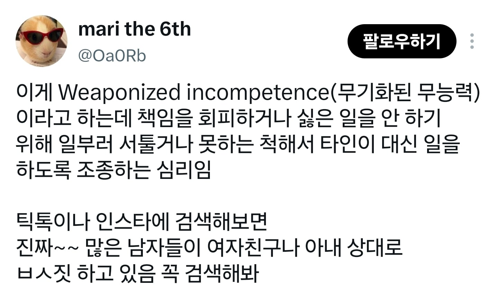

면봉? 마지막으로 써서 비었으면 채워야지
ㅇㅎ
사무실 같은 층 다른 팀 남자직원들 다 저지랄함 진짜 신기할 만큼 ㅋㅋㅋ 집에선 멀쩡한 척 하고 다니는지 몰라도
내가 어릴때부터 해오던 짓이네
식당이나 카페가서 앉아있다가 나가려고 일어날때 의자 정리 하냐 안하냐만 봐도 저런 부류인지 아닌지 대번에 판단 가능
나
거
한
흠 난가?
또 보지들 좆같은 용어 하나 만들어냈네

자동으로 리스폰되는게 아니였다고??
이거 여자들이 추석에 전부치기 싫을때 하던거 아니었냐?
의식하고 저렇게까지 한다고?
화장실은 뭐임?